01 / BEFORE
المكان كما كان
The place as it was
قبو خرساني، أرض ترابية، مخلفات وطوب وممرات مهجورة.
A concrete basement, bare ground, debris, bricks and abandoned corridors.
من قبو كان يُستخدم كمكب للنفايات، إلى مسرح ومساحة للبروفات وستوديو للصوت والمحتوى المرئي. قصة مكان لم ينتظر أن يكون جاهزًا للفن، بل صنعه الفنانون بأنفسهم.
From a basement used as a waste dump to a theatre, rehearsal space, sound studio and visual-content studio — a place that did not wait to be ready for art. Artists built it themselves.
كان المكان في الأصل قبوًا «بدروم» يخدم عمارتين، ويُستخدم كمكب للنفايات. لم يكن مسرحًا، ولم يكن مساحة فنية جاهزة.
The place was originally a basement serving two buildings and used as a waste dump. It was not a theatre or a ready-made arts space.
فبنينا واحدًا.So we built one.بالجهود الذاتية، بدأ فنانو تياترو الصعيد في تحويل المكان بأنفسهم. أعمال بناء وتجهيز ودهان وكهرباء، خطوة وراء خطوة، حتى صار للمكان حياة جديدة.
Through self-funded, hands-on work, Teatro Alsaeed artists transformed the place themselves — building, preparing, painting and wiring it step by step until the space gained a new life.
الفنانون كانوا هم الصنايعية.
The artists were the builders.
الصور هنا ليست مجرد أرشيف للمكان؛ إنها توثيق للعمل الذي قام به الفنانون بأنفسهم حتى أصبح القبو مسرح البدروم.
These images are more than an archive. They document the hands-on work through which artists transformed the basement into the Basement Theatre.
قبو خرساني، أرض ترابية، مخلفات وطوب وممرات مهجورة.
A concrete basement, bare ground, debris, bricks and abandoned corridors.
من الرمل والدهان والكهرباء إلى تجهيز الجدران والإضاءة — العمل تم بالجهود الذاتية.
From sand, painting and electrical work to walls and lighting — the transformation was hands-on and self-driven.
مسرح حيّ يستقبل العروض والجمهور والتدريب والاجتماعات والأنشطة الفنية.
A living theatre hosting performances, audiences, training, meetings and artistic activity.
من أول لقطة للمكان قبل التحويل، مرورًا بأعمال التجهيز، وصولًا إلى المسرح والجمهور. هذه هي ذاكرة البدروم.
From the first images of the basement, through the work, to the theatre and its audiences. This is the memory of the Basement.


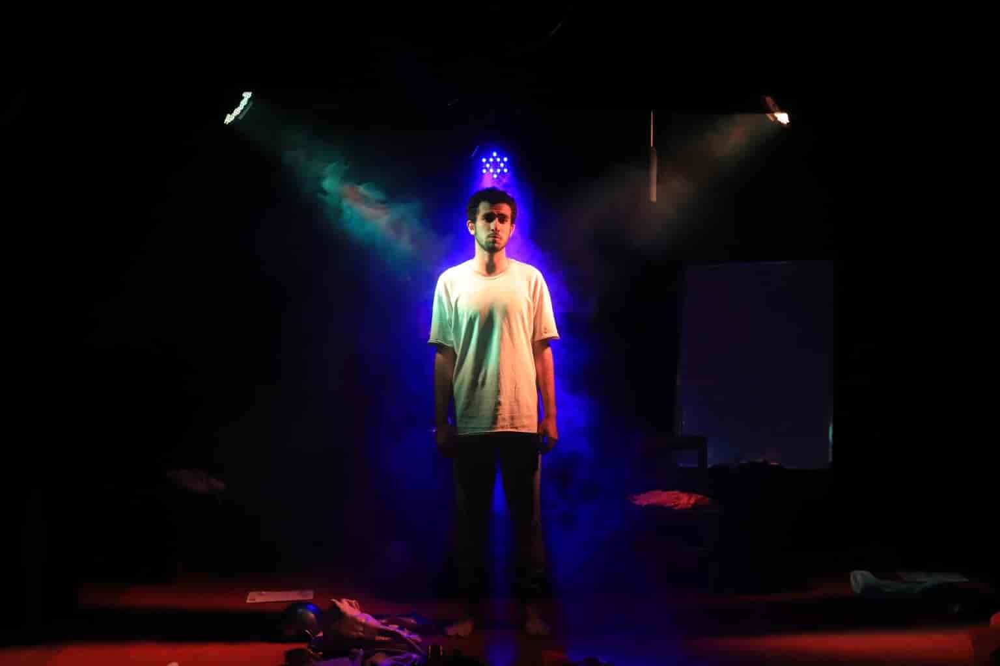

على مدار رحلته، استقبل مسرح البدروم عددًا من الفنانين والنجوم الذين شاركوا المكان لحظاته وفعالياته واحتفالاته.
Throughout its journey, the Basement Theatre has welcomed artists and stars who shared its performances, events and special moments.


مسرح البدروم مساحة متاحة للفرق المسرحية والفنية والفعاليات الثقافية، من خلال الاستضافة والتيسير وبناء الشراكات مع الفرق والفنانين، إلى جانب توفير مساحة مناسبة للتدريبات والبروفات.
The Basement Theatre is available to theatre and arts groups and cultural events through hosting, facilitation and partnerships with artists and troupes, while also providing a practical space for rehearsals and training.
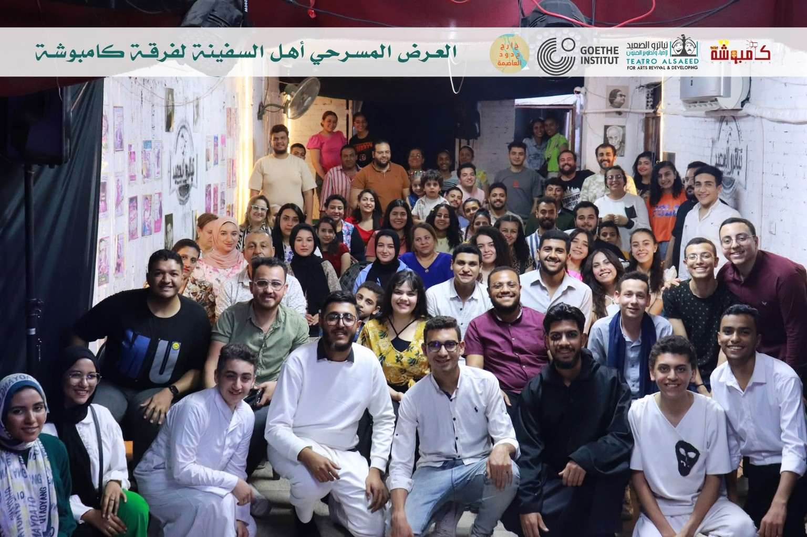
عروض وفعاليات Performances & Events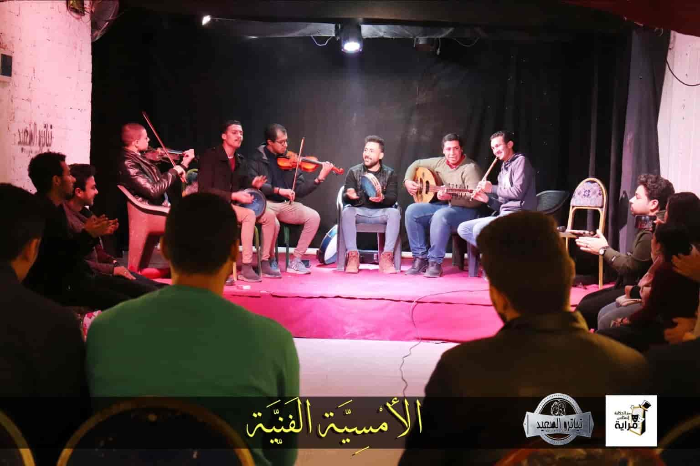
شراكات فنية Artistic Partnershipsمن العروض المسرحية والأمسيات الموسيقية إلى ليالي السينما واللقاءات الفنية، استضاف مسرح البدروم تجارب متنوعة صنعتها فرق وفنانون وجمهور من داخل المنيا وخارجها.
From theatre performances and live music to cinema nights and artistic gatherings, the Basement has hosted diverse experiences created by troupes, artists and audiences from Minya and beyond.
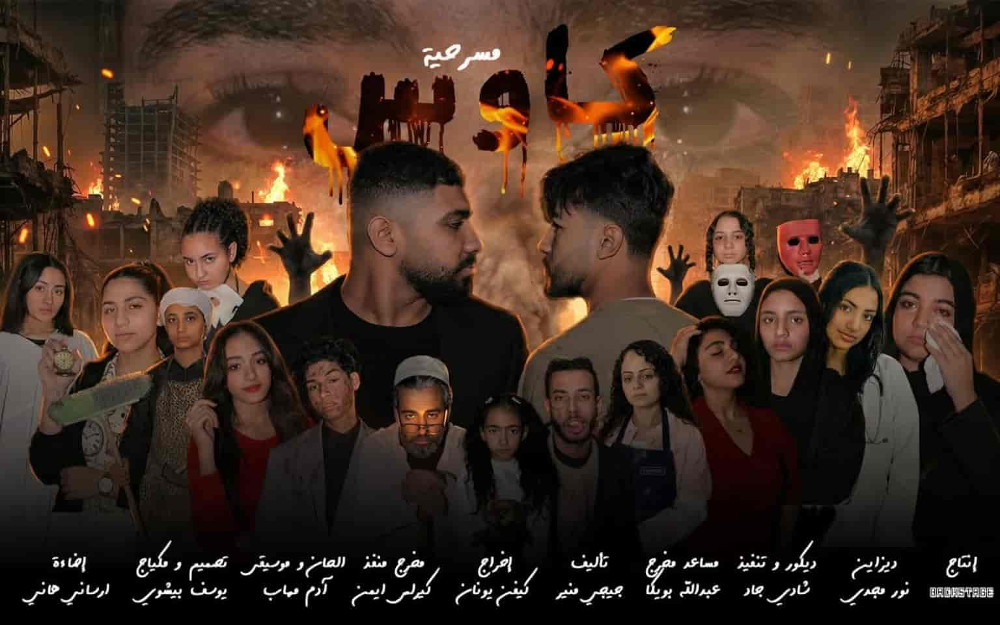
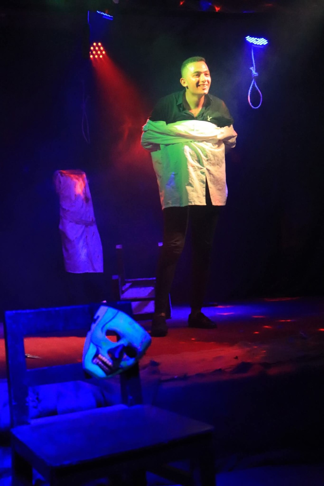
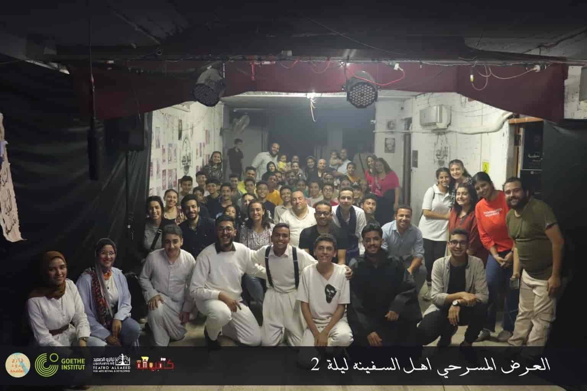
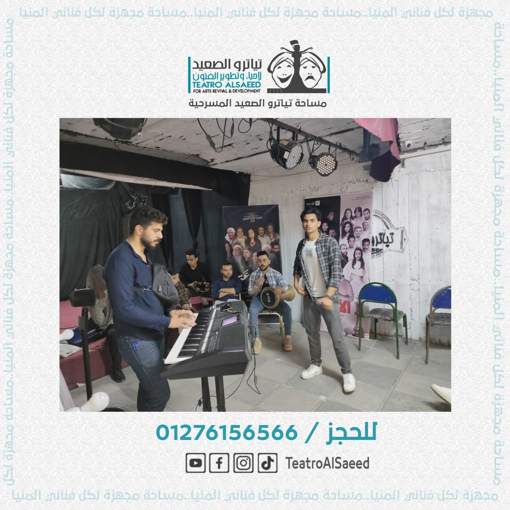
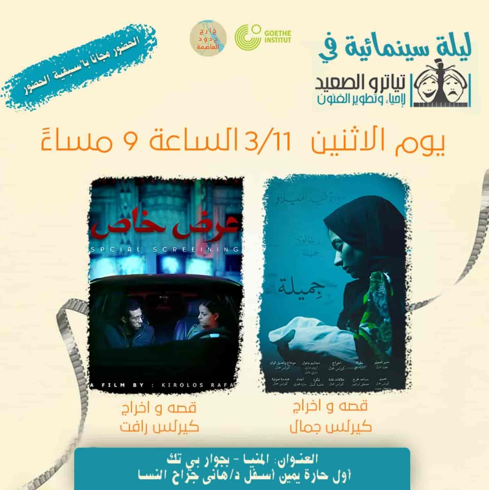
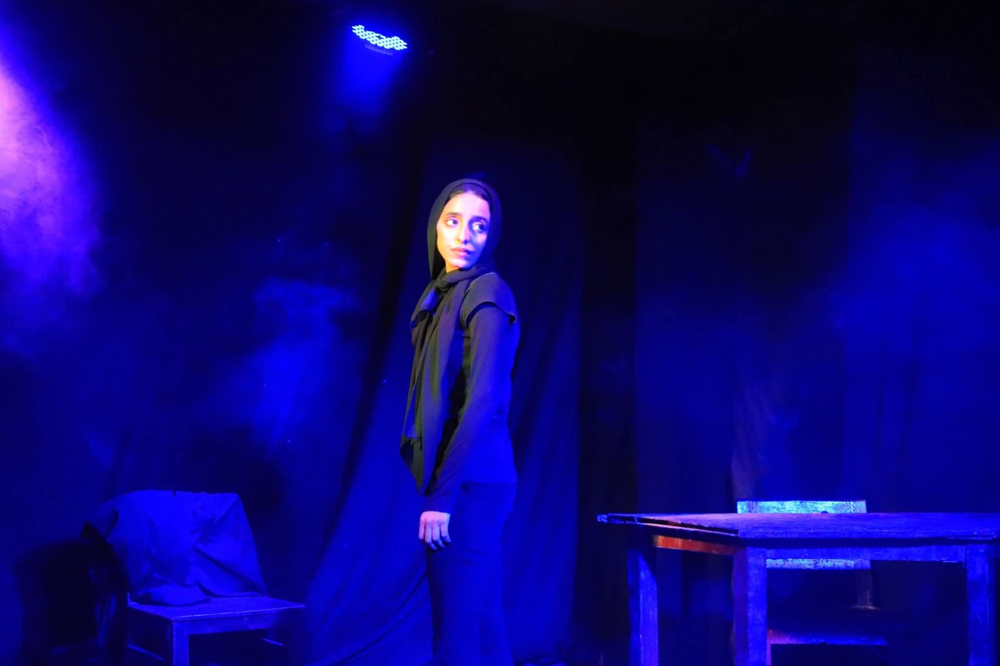
نتواصل معك لبحث إمكانية الاستضافة والتيسير والتعاون.
Talk to us about hosting, facilitation and collaboration.
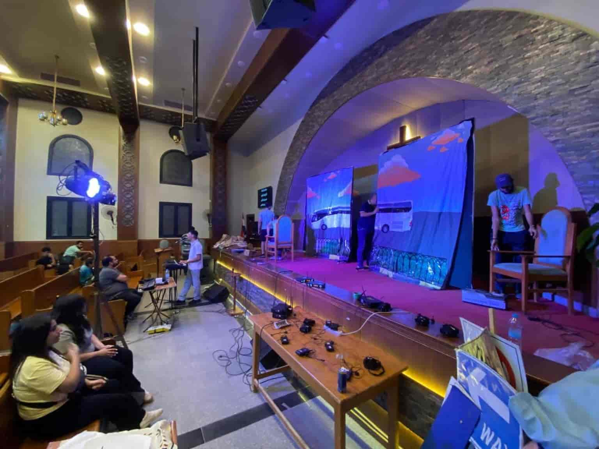
تجهيزات فنية Technical Setup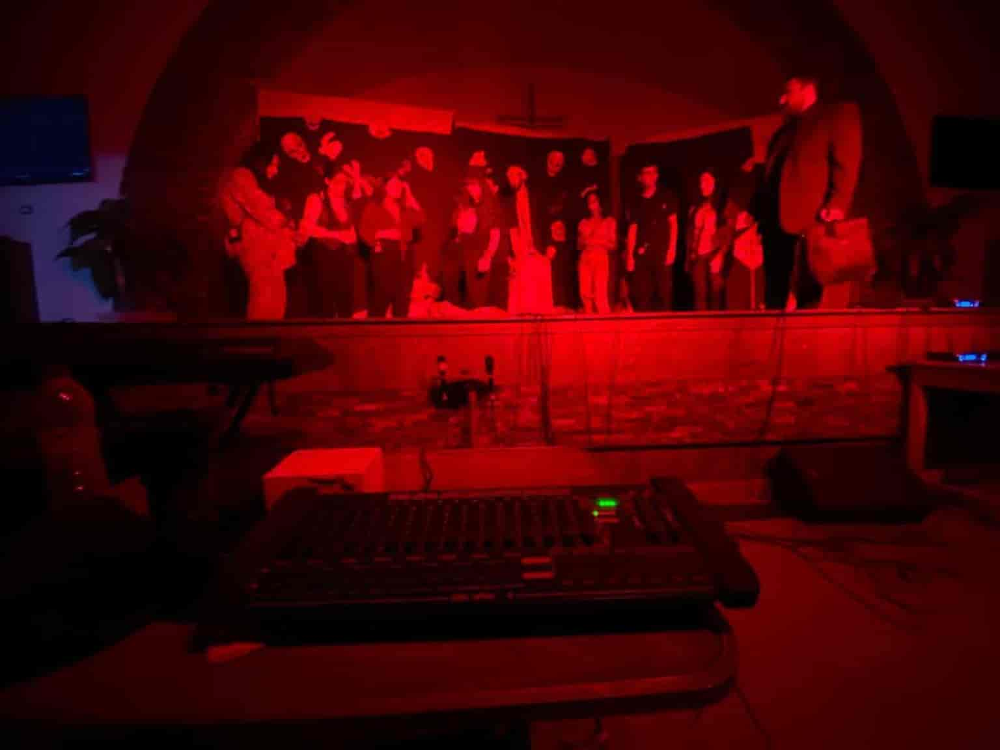
إضاءة وتجهيز Lighting & Setup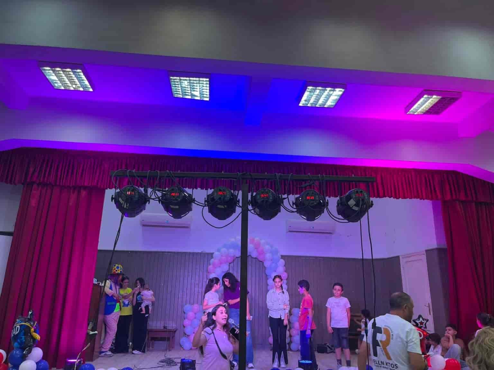
فعاليات فنية Live Eventsمعدات تياترو الصعيد متاحة للتأجير للحفلات والفعاليات الفنية والثقافية خارج المساحة، مع إمكانية توفير الدعم الفني المتخصص لضمان تشغيل المعدات بالشكل المناسب أثناء الفعالية.
Teatro Alsaeed's technical equipment is available for rental for concerts and artistic and cultural events outside the venue, with professional technical support available to ensure proper operation during the event.
للاطلاع على أمثلة من الفعاليات والمعدات وخدمات التشغيل، زوروا صفحة تياترو الصعيد على فيسبوك.
See examples of our events, equipment and technical operation on Teatro Alsaeed's Facebook page.
أصبح مسرح البدروم مساحة فنية متعددة الاستخدامات داخل منظومة تياترو الصعيد، تتيح للفنان أن يتعلم ويتمرن ويعرض ويسجل ويصنع محتواه.
The Basement Theatre has become a multi-use artistic space within the Teatro Alsaeed ecosystem — a place to learn, rehearse, perform, record and create.
مسرح البدروم ليس مجرد مكان. إنه دليل على أن المساحة الفنية يمكن أن تبدأ من أبسط الإمكانيات، عندما يقرر الفنانون أن يصنعوا فرصتهم بأنفسهم.
The Basement Theatre is more than a place. It is proof that an artistic space can begin with very little when artists decide to create their own opportunity.
تواصل مع تياترو الصعيدContact Teatro Alsaeed